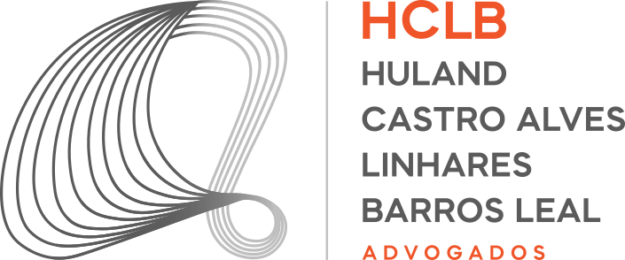

Pedro Peixoto é Desenvolvedor de IA & Automação na HCLB Advogados
Bacharel em Direito e desenvolvedor, focado na construção de aplicações web, automações no n8n e agentes de IA integrados a bancos de dados e LLMs. Histórico de redução de tempo operacional em 90% e 70% na perda de prazos.

Conectando o Direito à Tecnologia com Inteligência Artificial e Automação de Alta Performance
Atuo no desenvolvimento de soluções tecnológicas estratégicas para o setor jurídico e empresarial. Minha abordagem une a visão analítica do Direito com a eficiência de workflows orquestrados no n8n, agentes de inteligência artificial generativa e inteligência de dados (Power BI e SQL). Construo ferramentas focadas em resolver gargalos operacionais reais e eliminar tarefas repetitivas.
Cases & Aplicações em Destaque
Resumos de projetos desenvolvidos. Clique nos botões de ação para acessar o código ou material completo.
Gerenciador de Links TRT & Autenticação A1 OTP
Desenvolvimento de uma aplicação web em Next.js para centralização e acesso rápido aos 24 Tribunais Regionais do Trabalho (TRT 1 ao 24 e TST). Integração de gerador de tokens TOTP/2FA em tempo real (RFC 6238) para autenticação segura com Certificados Digitais A1.
Automação de Diários da Justiça & Cruzamento ERP
Criação de workflow orquestrado no n8n para captura diária automatizada de diários unificados da Justiça, sincronização de dados entre ERP e banco PostgreSQL (Supabase), reduzindo em 90% o tempo da rotina operacional.
Agentes de IA para Minuta de Contratos & Peças
Desenvolvimento de Agentes de Inteligência Artificial para geração e validação automatizada de minutas contratuais padronizadas, reduzindo drasticamente custos de assinaturas com provedores de LLMs.